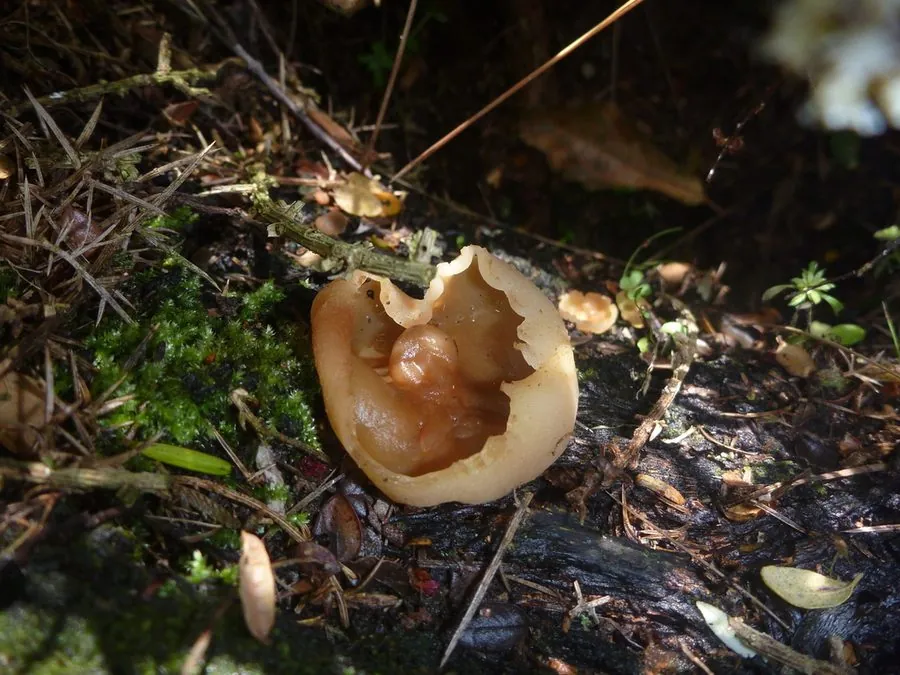

真菌 · 真菌界
盘菌 Peziza repanda

盘菌的子实体呈浅杯状或盘状，淡褐色、边缘呈波浪形，常长在腐木和腐殖土上，是子囊菌中形态最直观的一类，不可食用。
- 分类
- 门子囊菌门纲盘菌纲目盘菌目科盘菌科属盘菌属
- 栖息环境
- 腐木、树皮、腐殖质土壤与堆肥，春季至初夏出菇
- 地理分布
- 温带地区广泛分布，中国各地林地与庭院常见
- 保护级别
- 暂无评估（IUCN 未评估，中国未列入重点保护名录）
物种志
盘菌是子囊菌门盘菌科的真菌，子实体呈杯状、盘状或浅碗状，直径 3–10 cm，无柄或有不明显的短柄。内表面（子实层）呈淡褐色至黄褐色，平滑；外表面颜色较浅，呈灰白色至淡黄褐色，常有细小的粉霜或绒毛；边缘薄而呈波浪状，成熟后常开裂。子囊排列在子实层中，每个子囊内含 8 枚椭圆形的子囊孢子，孢子印白色。
盘菌生于腐木、树皮、腐殖质土壤和堆肥上，春季至初夏出菇，在温带地区分布广泛，中国各地林地和庭院中都能见到。它靠分解有机质生活，是森林物质循环中的分解者。盘菌属的种类外形相似、难以区分，多数没有食用价值，部分种类生食可能引起肠胃不适，因此不建议采食。它杯状或盘状的子实体是子囊菌的典型代表，常被用作讲解真菌分类和显微观察的材料。
形态与习性
- 子实体杯状或盘状，直径 3–10 cm
- 内表面淡褐色至黄褐色，平滑
- 外表面灰白色，有细粉霜
- 边缘薄而呈波浪状，成熟后开裂
- 孢子每个子囊含 8 枚子囊孢子
- 食用性无食用价值，不建议采食
- 生境腐木、腐殖土与堆肥
趣味知识
- 盘菌的子实体就是一个浅浅的杯或盘，子实层长在内表面。
- 它的子囊里通常装着 8 枚子囊孢子，是子囊菌的典型特征。
- 盘菌属种类外形相似，靠肉眼很难区分，不建议采食。
- 盘菌常出现在腐木和堆肥上，帮助分解有机质。